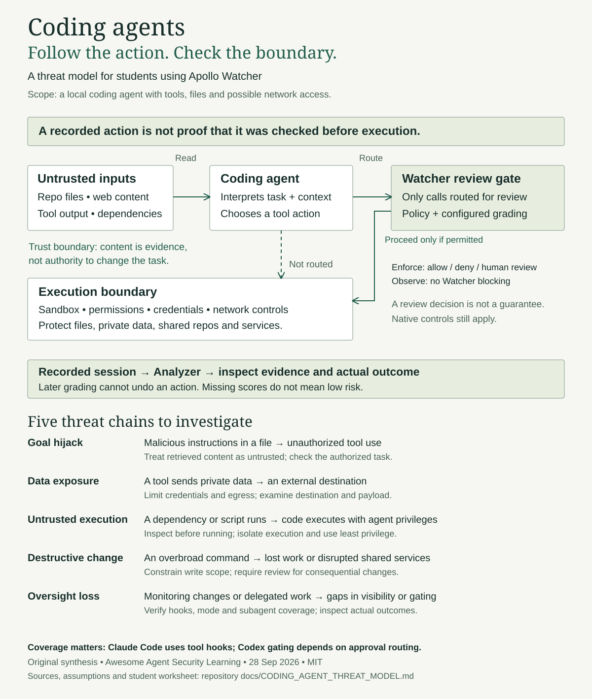

Build agents.
Understand the risks.
Learn to secure, test, evaluate, and govern AI agents. A curated collection of hands-on labs, courses, research, and perspectives.
Explore the libraryWhere can a coding agent go wrong?
Our original threat model follows untrusted inputs through tool actions, review gates and execution boundaries. Built for students working with Apollo Watcher.
Recorded does not mean prevented. Learn which actions reach review—and which need independent controls.
Original learning aid · Reviewed 28 September 2026

The library
Showing {{COUNT}} resources
No matching resources
Try a broader search or clear your filters to see the full library.
Curated by people. Discovered with automation.
New resources arrive as pull requests for a maintainer to evaluate. Merging a proposal adds it here. Labels distinguish agent-specific learning from broader AI and foundational material. Inclusion is not an endorsement; verify availability and cost with each provider.
Read the curation policy